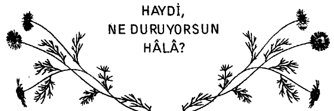

Bir gece, kadının biri havaalanında bekliyordu. Uçağının kalkmasına daha epeyce zaman vardı. Havaalanındaki dükkândan bir kitap ve bir paket kurabiye alıp, kendisine oturacak bir yer buldu. Kendisini kitabına kaptırmış olmasına rağmen, yanında oturan adamın olabildiğince cüretkâr bir şekilde aralarında duran paketten birer birer kurabiye aldığını fark etti; ne kadar görmezden gelse de.
Bir taraftan kitabını okuyup kurabiyesini yerken, bir taraftan da gözü saatteydi. ‘Kurabiye hırsızı’ kurabiyeleri yavaş yavaş tüketirken, kadının kulağı da saatin tiktaklarındaydı; ama tiktaklar sinirlenmesini yine de engelleyemiyordu. Kendi kendine düşünüyordu; ‘Kibar bir insan olmasaydım, şu adamın gözünü morartırdım!’
Her kurabiyeye uzandığında, adam da elini uzatıyordu. Sonunda pakette tek bir kurabiye kalınca, ‘Bakalım şimdi ne yapacak?’ dedi kendi kendine.
Adam yüzünde asabi bir gülümsemeyle son kurabiyeye uzandı ve kurabiyeyi ikiye böldü. Kurabiyenin yarısını ağzına atarken, diğer yarısını kadına verdi. Kadın kurabiyeyi adamın elinden kapar gibi aldı ve, ‘Aman Tanrım, ne cüretkâr ve ne kaba bir adam; üstelik bir teşekkür bile etmiyor!’ diye düşündü.
Hayatında bu kadar sinirlendiğini anımsamıyordu. Uçağın kalkacağı anons edilince, derin bir nefes aldı ve rahatladı. Eşyalarım topladı ve çıkış kapısına yürüdü. Kurabiye hırsızına dönüp bakmadı bile. Uçağa bindi ve rahat koltuğuna oturdu. Daha sonra kitabını almak üzere çantasına uzandı. Birden, gözleri şaşkınlıkla açıldı. Gözlerinin önünde bir paket kurabiye duruyordu! Çaresizlik içinde inledi; “Bunlar benim kurabiyelerimse eğer; ötekiler de onundu ve benimle her bir kurabiyesini paylaştı!” Üzüntüyle, özür dilemek için çok geç kaldığım anladı.
Kaba ve cüretkâr olan ‘kurabiye hırsızı’ kendisiydi.
Hayat; bir nefsu ğruna, hep eğlenmek, dalga geçmek, yalanların arkasına sığınıp güzel olan şeyleri de kıymetini bilemeyip kullanıp, öldürmek değil ki!
Her şeyi, herkesi aynı kefeye koyup, mutlu olma şansından vazgeçmemeliyiz.
Nereye kadar... Neden korkuyoruz?
Sevmekten mi? Sevilmekten mi? Nereye kadar gerçeklerden kaçabiliriz ki... Zaman dediğimiz nereye kadar? Kaybedene kadar mı? Eğer niyetin kendini tatmin etmek, kullanmak değilse... Haydi, sen kazan!
Eğer gerçekten seviyorsan, zaman kaybetme. Zaman derken elimizdekileri kaybediyoruz... Sevdiğini Söyle! Ve Kazan!
Mutlu olmayı... zamanı sen kazan!..
Bir 'Seni seviyorum/ demek hiçbir şey kaybettirmez, ama çok şey kazandırabilir.
Bazen bir ömrü bile! Haydi şimdi, en azından bir telefon edip sesini duy... Kaybedebileceklerini düşün. Ya da kazanabileceklerini... Niye 'Keşke'ler yerine,
'İyi ki'leri söylemeyelim?..
